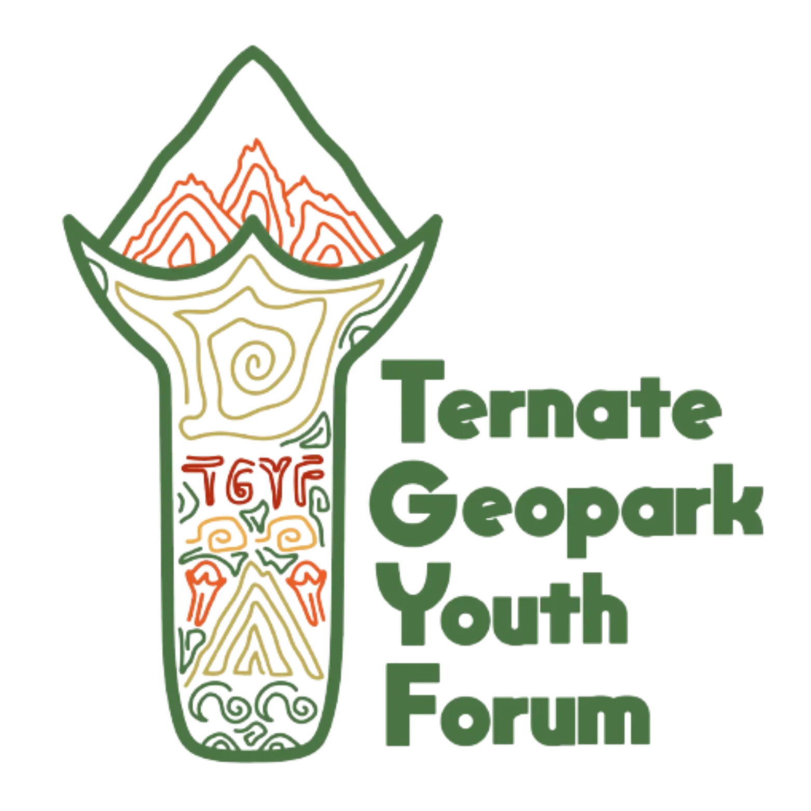
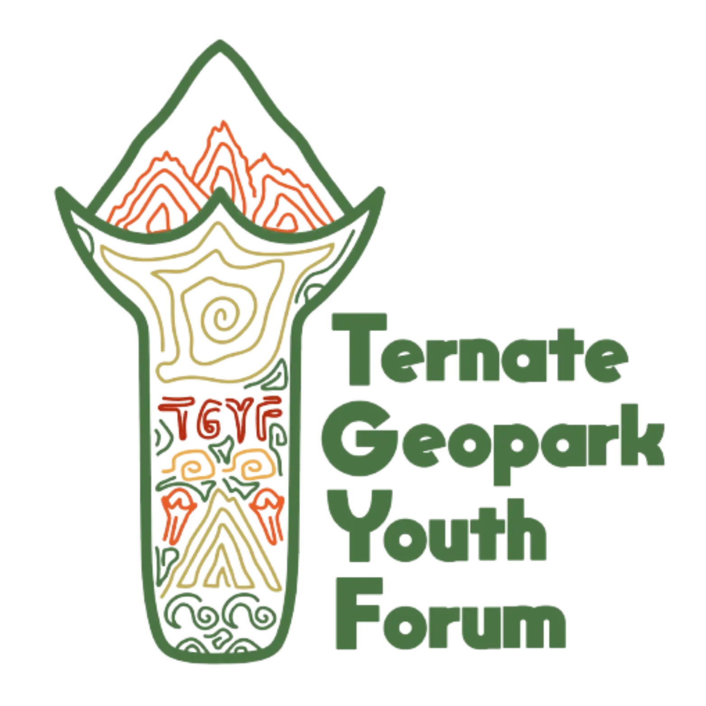

Tentang
Website ini adalah situs web tentang Batu Angus, salah satu geosite yang berada di kawasan Geopark Nasional Ternate. Geosite ini merupakan sebuah formasi batuan yang terbentuk akibat aktivitas vulkanik Gunung Gamalama. Batu-batu di Batu Angus berwarna hitam pekat dan memiliki bentuk yang unik, sehingga menjadi daya tarik tersendiri bagi wisatawan.
Website ini bertujuan untuk memberikan informasi tentang Batu Angus kepada masyarakat luas. Informasi yang disajikan di website ini meliputi sejarah, geologi, dan pariwisata Batu Angus. Website ini juga menyediakan informasi tentang cara menuju Batu Angus dan fasilitas yang tersedia di kawasan ini.
Website ini dibuat oleh tim yang terdiri dari para ahli geologi, arkeolog, dan pemandu wisata. Tim ini memiliki pengalaman yang luas dalam bidangnya masing-masing. Mereka berkomitmen untuk memberikan informasi yang akurat dan terkini tentang Batu Angus kepada masyarakat luas.
Website ini dirancang untuk mudah digunakan oleh semua orang. Informasi yang disajikan di website ini dikemas dengan cara yang menarik dan mudah dipahami. Website ini juga dilengkapi dengan fitur-fitur yang memudahkan pengguna untuk mencari informasi yang mereka butuhkan.
Website ini merupakan sumber informasi yang penting bagi masyarakat yang ingin mengetahui lebih lanjut tentang Batu Angus. Website ini juga merupakan sarana promosi untuk pariwisata Batu Angus. Website ini diharapkan dapat membantu meningkatkan kunjungan wisatawan ke Batu Angus dan meningkatkan kesejahteraan masyarakat di sekitar kawasan ini.